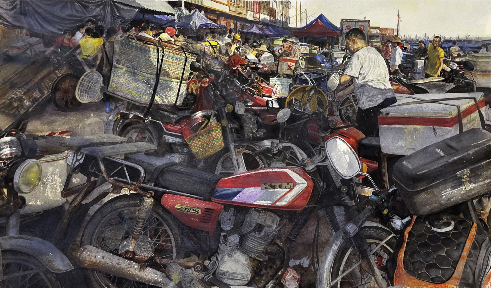

Passion at the Fishing Port
热情渔港

- Artwork ID / 作品编号
- KW-W-000034
- Year / 年份
- 2021
- Medium / 媒介
- Watercolor on paper / 纸本水彩
- Dimensions / 尺寸
- 62 × 105 cm (H × W / 高 × 宽)
Passion at The Fishing Port focuses on a working harbor where trade, transport, and everyday travel occur at once. Motorcycles, people, goods, and fishing equipment form a dense but directional visual network, while light, color, and repeated circular forms turn congestion into rhythm. The painting records how labor organizes local life and how temporary order emerges through continuous movement. The harbor appears as a site shaped jointly by production, exchange, and social contact.
《热情渔港》聚焦真实渔港中交易、运输与日常出行同时发生的场面。摩托车、人群、货物和渔具形成密集而有方向的视觉网络，拥挤由光线、色彩和反复出现的圆形结构转化为节奏。作品记录劳动如何组织地方生活，也关注人在持续流动中建立的临时秩序。渔港由此呈现为生产、交换与社会联系共同作用的现场。